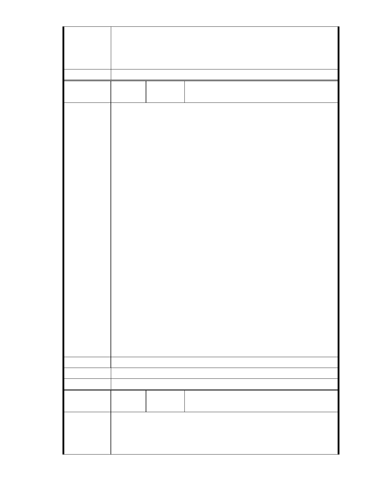

委員會決議
能；目前申請方案較先前方案已大幅降低開發強度、調整使用項目
並承諾大面積滯洪設施等回饋事項，將改善地區整體環境促進多贏
發展。
二、相關陳情意見將納入本案審查人民意見，依法定程序辦理。
同編號 1。
編
號 124
陳情人 陳乃立（MA201210240045 ）、大湖內閣大廈管理
委員會
主旨：
有關「變更臺北市內湖區成功路五段大湖公園北側部分保護區及道路用
地為社會福利特定專用區主要計畫案」，基地內有二筆「國有道地目」
既成道路土地，為既成農路自然行成，長期供當地居民通行使用，亦為
後方農地、農舍唯一進出道路，不容任意廢除，詳如說明，敬請查照。
說明
經查變更範圍內有地號 135（112 平方公尺）及地號 142（448 平方公尺）
二筆土地，為「國有道地目」既成道路，長期供當地居民通行使用，具
公共地役權，不容任意廢除，應先依「臺北市現有巷道廢止或改道自治
條例」規定，辦理廢「巷」的行政程序辦理。
陳 情 理 由 慈濟自民國 90 年購地以來，即逕自設門上鎖將 135 地號國有道路地據為
己有，長期竊佔國土限制居民進出使用，完全漠視公眾「通行」權益。
經查申請變更範圍內地號 142「國有道地目」既成道路，為北基地後方農
地、農舍唯一進出聯外道路，影響居民通行權益甚鉅，未經法定廢巷行
政程序，不得任意廢除。
本聯盟是由一群社區裡的家庭主婦、退休居民和學生所組成，大家自掏
腰包捐出買菜錢、退休金、和打工賺來的零用錢，只希望能用一己微薄
之力希望能守護內湖珍貴的山水和我們深愛的家園。請 貴會通知本聯盟
列席參與本案後續所有會勘、審議，並請依政府資訊公開法將會議時間、
地點，及會議資料、紀錄等相關資訊提前公開上網，俾便閱覽。
建議辦法
市 府 說 明 相關陳情意見將納入本案審查人民意見，依法定程序辦理。
委 員 會 決 議 同編號 1。
編號
陳情理由
125
陳情人 陳 乃 立 （ MA201210240049 ）、 洪 美 惠
（MA201210310190 ）
主旨：
有關「變更臺北市內湖區成功路五段大湖公園北側部分保護區及道路用
地為社會福利特定專用區主要計畫案」及「擬訂臺北市內湖區成功路五
段大湖公園北側社會福利特定專用區細部計畫案」，依 89 年農委會水保
- 137 -